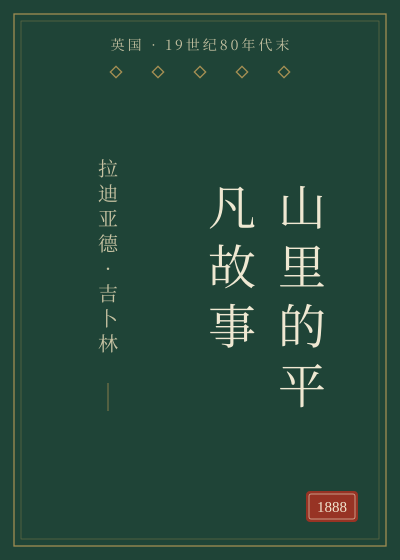
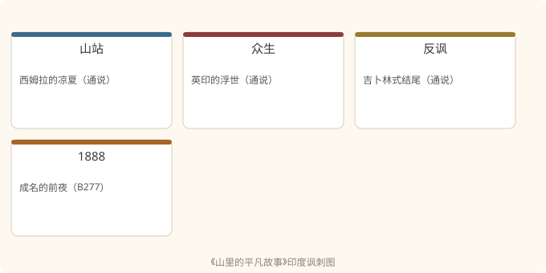

山里的平凡故事
一、基本信息
| 作者 | 鲁德亚德·吉卜林 |
|---|---|
| 成书/出版 | 1888年（Britannica B277：Plain Tales from the Hills 1888） Rudyard Kipling — Encyclopaedia Britannica（百科全书） |
| 国别/地区 | 英国 |
| 时代 | 近代 · 19世纪80年代末 |
| 体裁 | 短篇小说集 |
| 语言 | 英语 |

《山里的平凡故事》印度讽刺图（主题·结构图）
二、创作背景
Britannica（B277）：Plain Tales from the Hills 1888——吉卜林早期印度短篇集。
Britannica（B277）：吉卜林——1907诺奖（作者页交叉——待核）。
题材（通说待核）：英属印度的'山间车站'——四十篇军政故事。
三、内容脉络
（通说待核）西姆拉社会的众生相：军官、婚姻与流言。
（通说待核）'吉卜林式'的反讽结尾。
四、主要人物表
| 人物 | 身份 | 说明 |
|---|---|---|
| 众篇人物 | 英印官员 | （通说待核） |
五、主题与艺术特点
- 英印社会的讽刺（通说待核）。
- '山里'：西姆拉避暑地（书名语境——通说待核）。
- 短篇的反讽技艺（通说待核）。
六、影响与评论
- Britannica：Plain Tales from the Hills 1888（B277）。
Rudyard Kipling — Encyclopaedia Britannica（百科全书） - Britannica：吉卜林诺奖（B277 作者页交叉）。
Rudyard Kipling — Encyclopaedia Britannica（百科全书）
七、阅读建议
难点
- 英印术语（'山站'等）。
- 40篇的体量。
- 《山里的平凡故事》中译本（人民文学等——通说待核）。
- 英文原版（公有领域）。
吉卜林早期首选；与《丛林之书》对读。
八、待核实
- 篇数（40篇说）核对（通说）。
- 1888年出版（Calcutta说）待核。
- '西姆拉'背景细节待核。
本页主要来源
相关作品：雷雨罗生门（芥川龙之介短篇小说选）罗亭